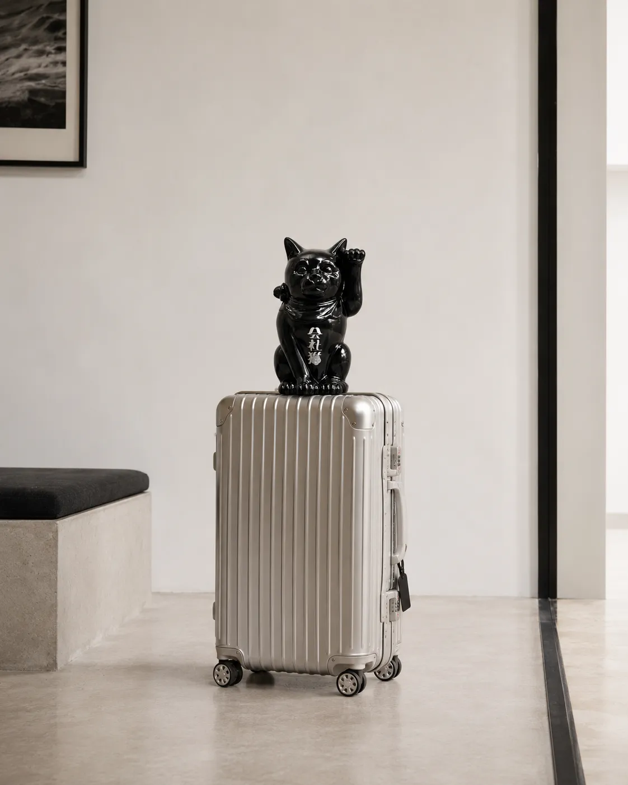

企業のロゴがずっと残る高級法人ギフト「会社猫」が登場
〜九谷焼の老舗窯元・宮創製陶所とともに、法人向けオーダーメイドの招き猫を2026年8月28日(金)より発売〜

UNPROLOGUE株式会社（本社：東京都渋谷区、代表取締役：梶山悠莉彩）は、九谷焼の置物素地で創業113年目を迎える宮創製陶所株式会社（本社：石川県小松市）とともに、企業のロゴやイベントの目的に合わせてデザインする法人向けオーダーメイド招き猫「会社猫」を、2026年8月28日(金)より発売します。
「会社猫」とは
企業らしさ、イベントらしさを九谷焼の招き猫に落とし込んでつくる、一社に一体のオーダーメイド招き猫です。招き猫デザイナーがご要望をもとにデザインを提案し、九谷焼の伝統色から選んだベースカラーに、企業のロゴやテーマを入れて仕上げます。前面には社名やロゴ、背面には設立年やメッセージなどの文字も入れられます。
胡蝶蘭に代わる、新しいお祝いのかたち
開業・就任・移転・周年など、これまで胡蝶蘭が選ばれてきたビジネスのお祝いに、「枯れずに、ずっと残る」贈り物を提案します。陶器の置物なので受付やオフィスに長く飾ることができ、処分の手間もかかりません。サイズは XS（高さ約6cm）から L（高さ約30cm）までの4種類で、日本国内は送料無料です。
想定される贈答シーン
- 開店・開業祝い／移転・新オフィス祝い
- 代表者・役員の就任祝い
- 創業・設立の周年記念、上場記念
- 取引先・パートナーへの記念品
- 海外の取引先への日本らしい贈答品
お問い合わせ
デザインのご相談・お見積もりは、会社猫 公式サイト、または hello@unprologue.jp までお気軽にご連絡ください。
プレスリリース全文：PR TIMES